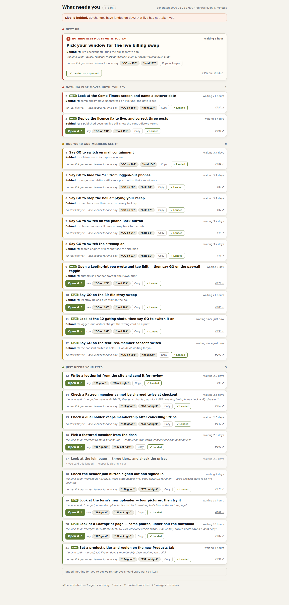
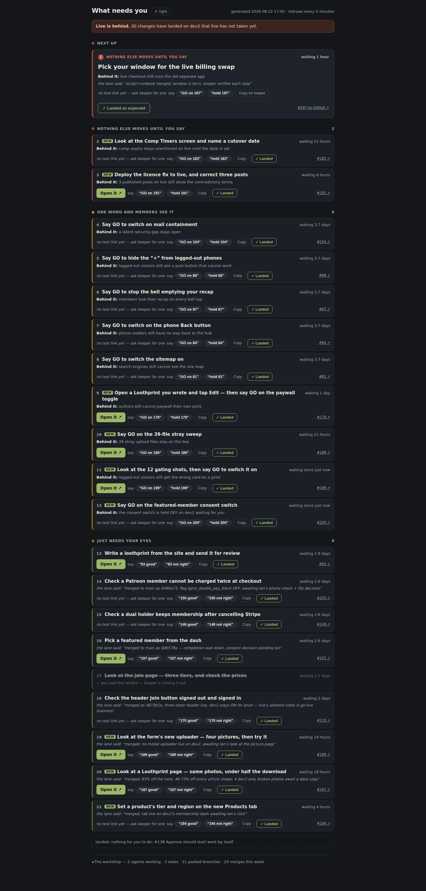
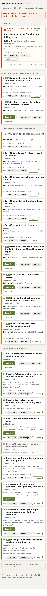
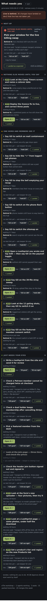
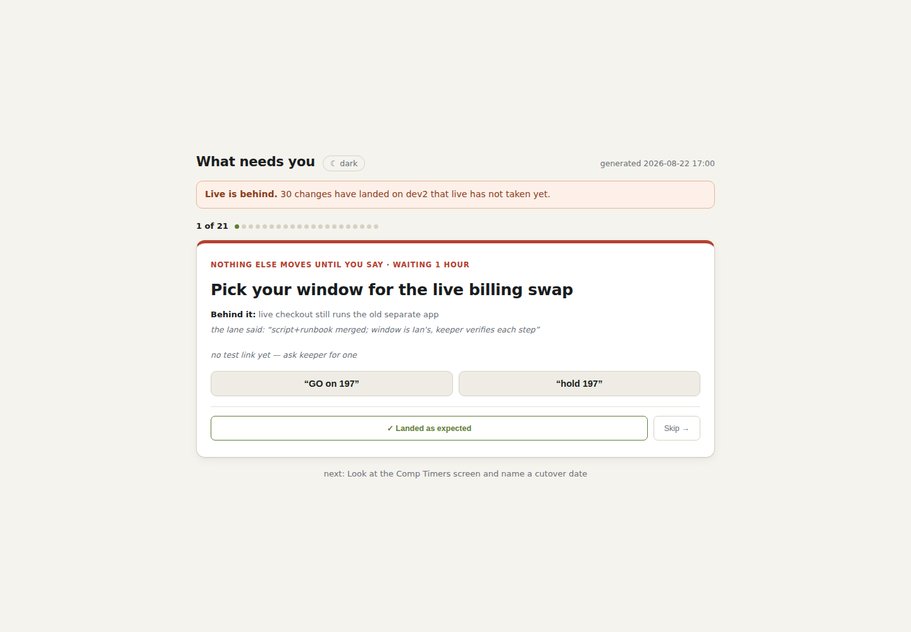
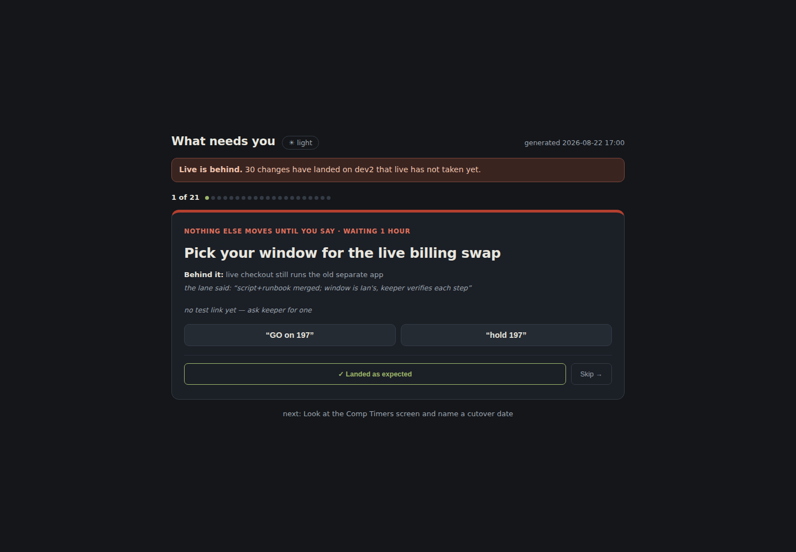
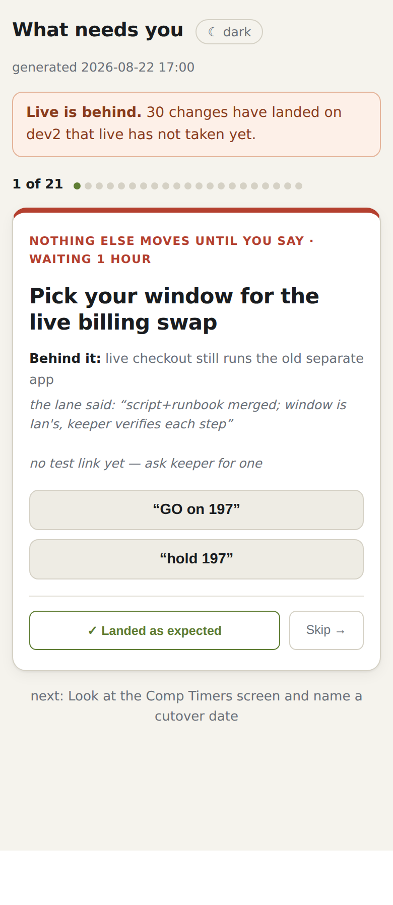
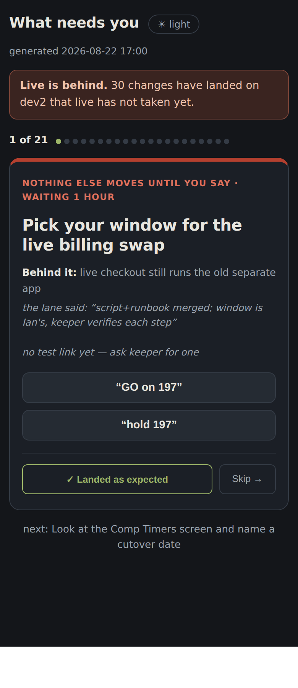

You said “to do still isn’t quite useful yet”. I measured the page before drawing anything, and the problem turned out not to be the way the cards look. The list is missing most of what actually waits on you.
Every item on your list today is from 19–20 August. Everything finished since then — the licence fix, the new uploader, the lighter photo pages, the Products tab, the loothprint gating, the billing cutover — is invisible to it, even though six of those already have a working link written and ready to use.
Why. The list is built from a label that someone has to remember to put on an issue by hand. The lanes themselves write the truth — “awaiting Ian’s look at the picture page” — and the page already reads those words, but only to quote them. It never uses them to decide what goes on the list. So when the label ritual slipped, the list quietly froze, and a frozen list looks exactly like a short one.
The single most-blocking thing gets a big card. Everything else is one compact line each, in three plain-English groups: nothing else moves until you say, one word and members see it, just needs your eyes. Longest-waiting first inside each group. Agents, seats, parked branches and history all fold into one drawer at the bottom.
The page shows exactly one thing, full size, with a counter: 1 of 21. Answer it or skip it and the next appears. There is nothing to parse — but you lose the cold-open snapshot, which is the one thing this page can do that chat cannot. That is why I recommend A.
main 19b43dd dev2 19b43dd live 2163c08.
Option A — desktop, light
Option A — desktop, dark
Option A — phone, light
Option A — phone, dark
Option B — desktop, light
Option B — desktop, dark
Option B — phone, light
Option B — phone, darkThese are static pictures. The buttons do not do anything yet. Say which shape you want and a build seat takes it from there.